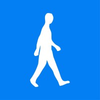

Team Member of People Analytics in the Talent Management department
AIESEC in Universitas Brawijaya
February 2025 - Present
|

|
AIESEC in Brawijaya
6 mos
|
- Conducted surveys and interviews to gather data on employee satisfaction and engagement
- Analyzed data to identify trends and patterns in member behavior
- Provided recommendations for improving member satisfaction and engagement
- Assisted in the development of training programs and workshops for members
- Conducted summits to present the overarching condition of the Local Committee
Leadership
Critical Thinking
Data Analysis
Newee of Quality Assurance in the Outgoing Global Exchange department
AIESEC in Universitas Brawijaya
October 2024 - February 2025
|
|
AIESEC in Brawijaya
6 mos
|
- Assisted in the selection process for outgoing exchange participants
- Conducted personal participant assessments to evaluate candidates' suitability for the program
- Ensured that all participants met the necessary requirements for the exchange program
Customer Service
Quality Control
Communication